Vicky Zheng
Founder
I enjoy seeing how a small act can bring a smile to someone's face. In my free time, I like swimming, dancing, watching sunsets, and taking long walks with my dog!
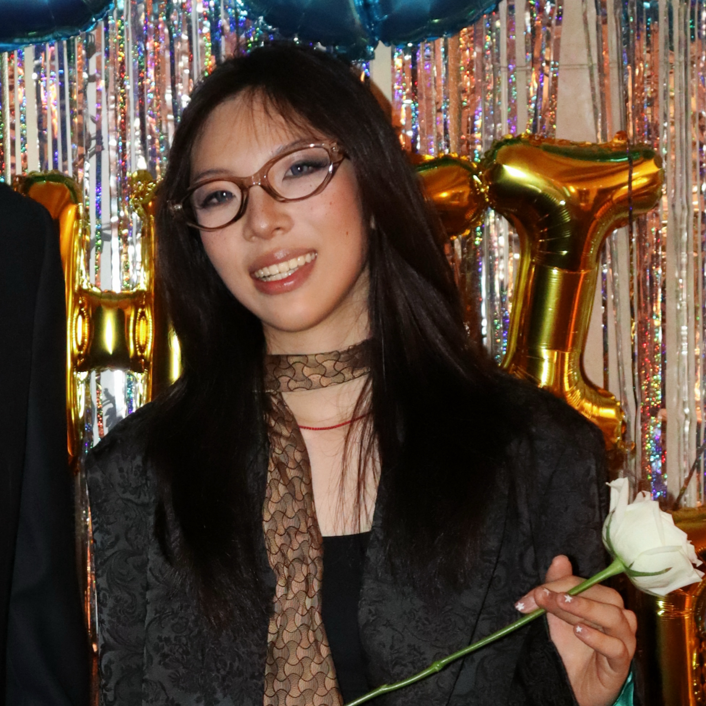
Jouen Zhang
Cofounder
I have lots of hobbies. I enjoy hiking, painting, and cooking... I especially love the feeling of being in nature!
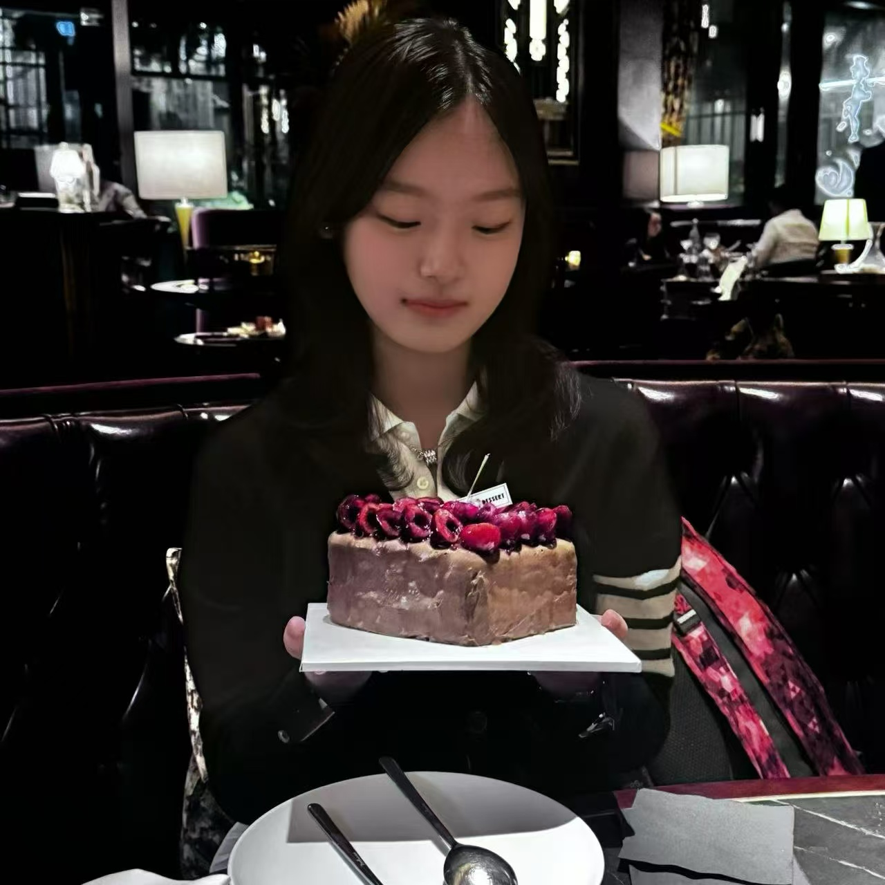
Astrid Liang
Bilingual Content Lead, Design & Crafts
In my free time, I enjoy a mix of activities. I love solving math puzzles and reading about new scientific discoveries, but I also balance that with creative outlets like painting and playing the piano. On weekends, I enjoy horseback riding, which keeps me active and gives me a sense of freedom. These activities not only help me relax but also inspire me to approach challenges with creativity and persistence.
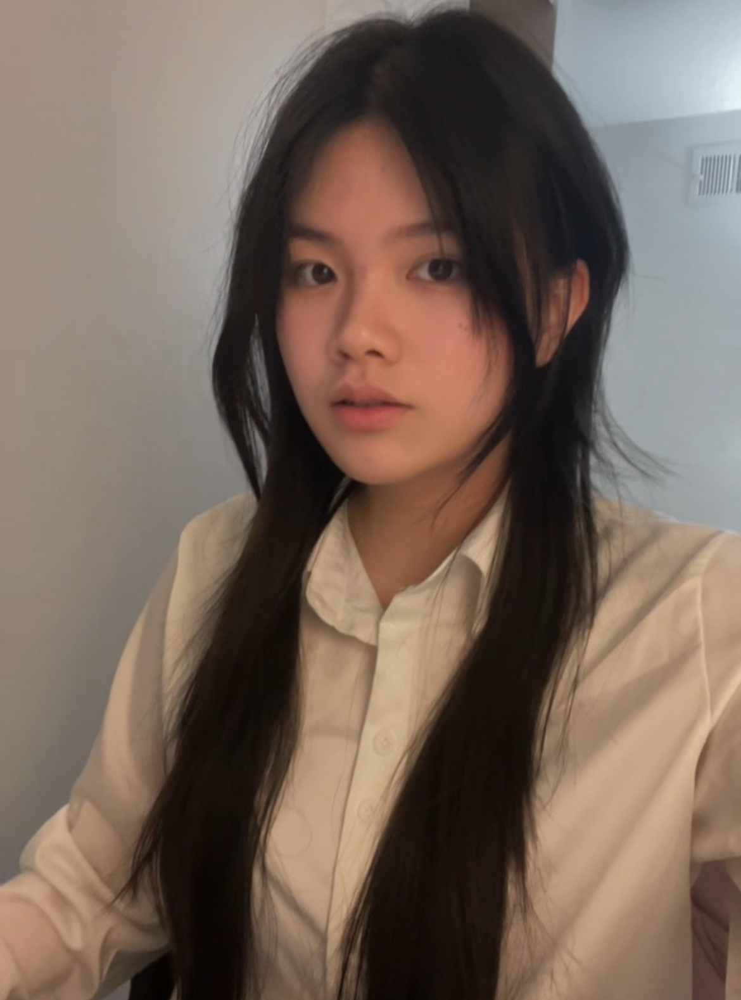
Zhouyuan Wu (Emily)
Website Lead, Project Reporting, Messages & Translations
My hobbies are drawing, photography, and music. I also enjoy watching movies and reading!
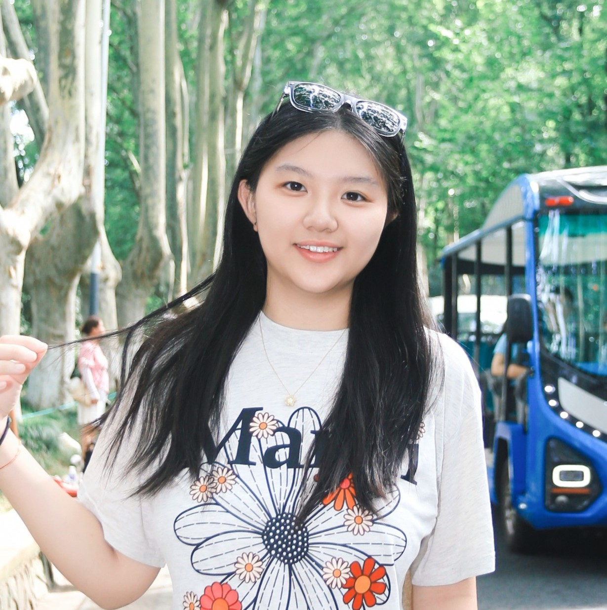
Jiayi Sun (Christina)
Project Reporting, Social Media Topic Lead
I love to play golf, listen to music, and watch movies in my free time. I enjoy outdoor activities, such as skiing and hiking.
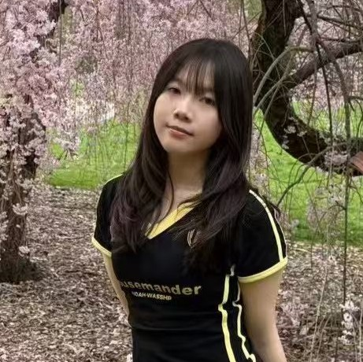
Tingting Ruan
Messages & Translations, Outreach
manicure, dancing, pilates, listen to music, and volunteering at hospital
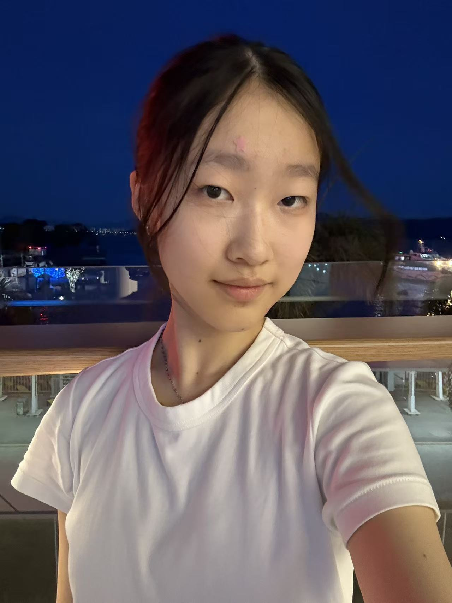
Ivy Li
Project Reporting
I like helping small communities in need and knowing how they live. My hobbies include playing clarinet, listening to kpop music, and journaling my thoughts.
Tze Kee Chua (Kloe)
Messages & Translations
I enjoy helping people in things they're weak at, trying to make a small difference to my society.I enjoy reading short novels and gallery hopping in my free time!
Victoria Cao
Messages & Translations
I like Latin dance, jazz dance, listening to music and reading novels.
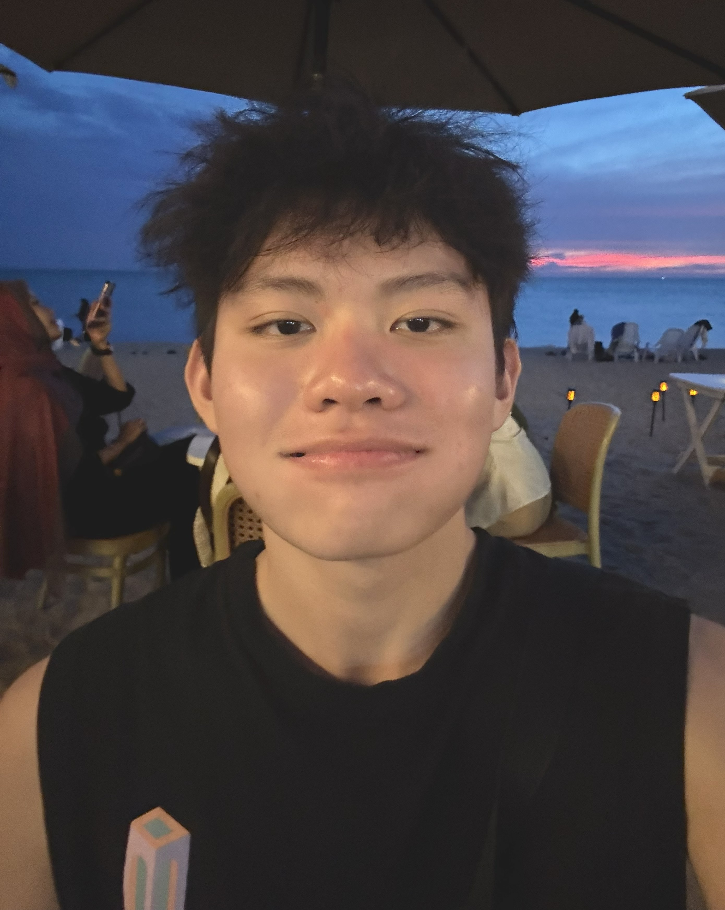
Kim Hung Low
Messages & Translations, Design & Crafts
I enjoy watching movies during my free time, sometimes I would go hiking and play basketball with my friends.
Rachael Sung
Messages & Translations
I enjoy helping out whenever I can, teaching, playing the violin, tennis, and reading.
Emily Gao
Design & Crafts, Messages & Translations
Lydia Gong
Messages & Translations
Nolia Chen
Design & Crafts
In my spare time, I like doing volunteer work to give back to the community and playing Identity V.
Vinci Chang
Project Reporting
I love to play volleyball, ultimate frisbee, listening to music, and photography. I also enjoy helping other people get better and see progress.
Yukee Shan
Design & Crafts
I like dancing, drawing, reading, listening to music.
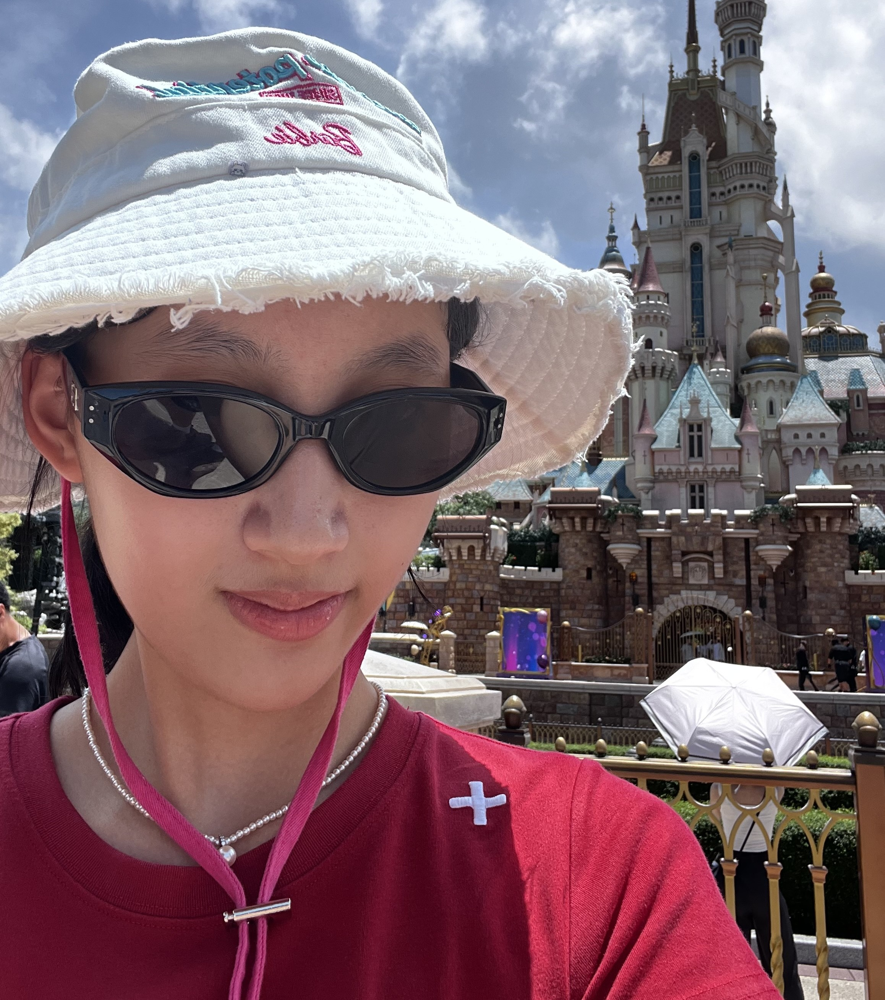
Cindy Chen
Design & Crafts
I enjoy helping others in my community. I'm passionate about exploring multiple art forms, like video editing, 3D modeling and illustration.
Jiayi Shan
Messages & Translations
I love spending time with people, helping those in need, and always being there for my friends. I also love listening to music and dancing
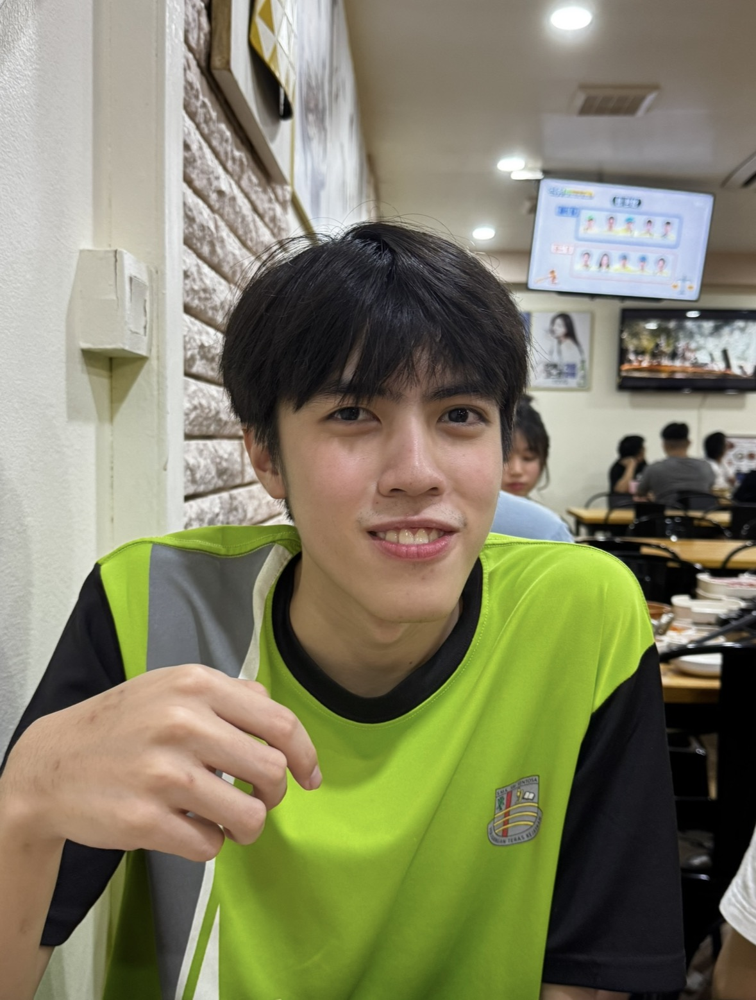
Yu Zhe Pang
Messages & Translations
I enjoy playing playing basketball with my friends during my free time, besides that I'd also read and listen to music.
Karry Wang
Messages & Translations, Project Reporting
Hanlei Zheng
Design & Crafts, Messages & Translations
I love swimming and helping those people who need tutoring.
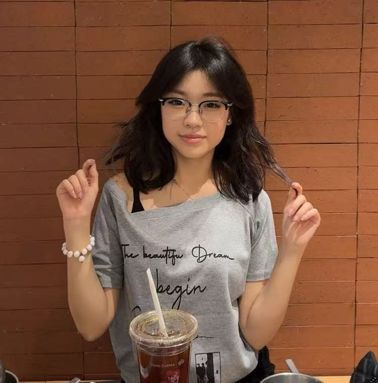
Qiushi Zhou
Messages & Translations
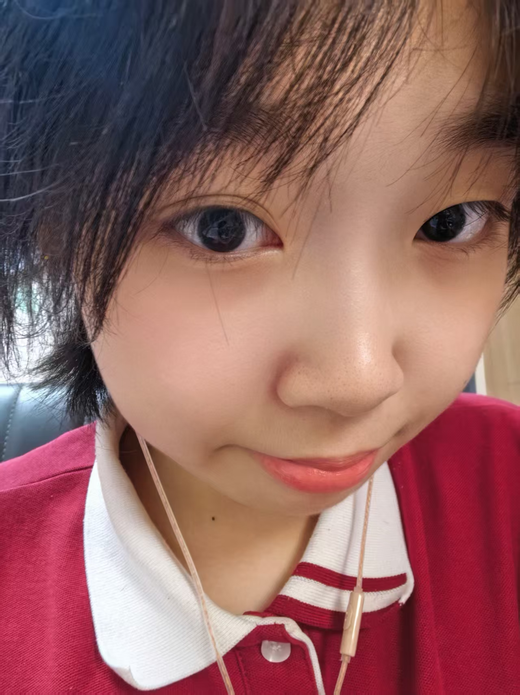
Yinuo Han (Hannah)
Design & Crafts
I like watching TV series and making handicrafts, especially twisting sticks and origami.